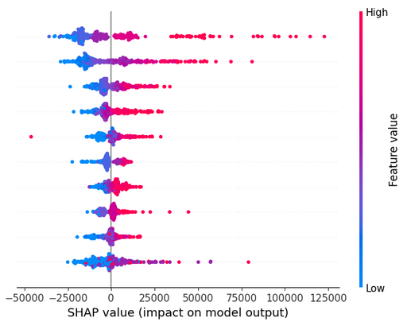

Model Interpretability

A blog series exploring practical tools for understanding, visualizing, and explaining model behavior.
1. PDPs: Partial Dependence Plots
An intuitive first step into understanding feature-level model behavior
Read More Notebook2. ICE Plots: Individual Conditional Expectations
From average effects to personalized curves—how ICE plots complement PDPs.
Read More Notebook3. SHAP Values
Game theory meets interpretability—understanding SHAP values and what they reveal.
Read More Notebook

5. LIME
Explaining any classifier prediction in an interpretable and faithful manner
Read More Notebook6. Counterfactual Explanations
Creating transparency and fairness through alternative paths to success
Read More Notebook